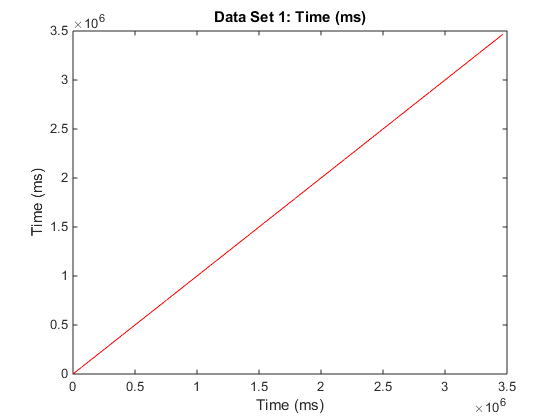
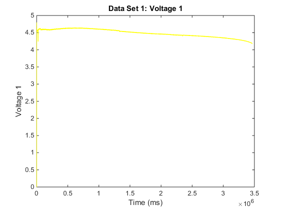
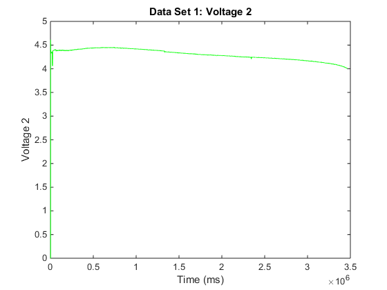
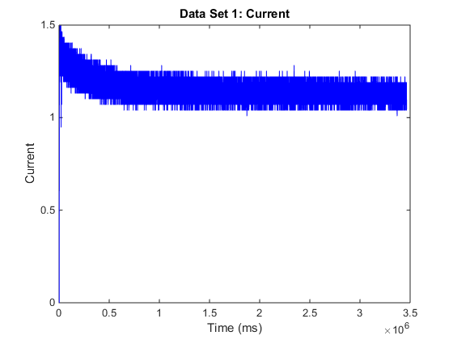
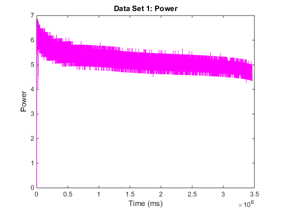
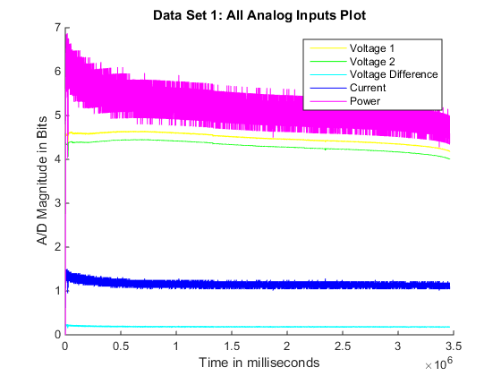
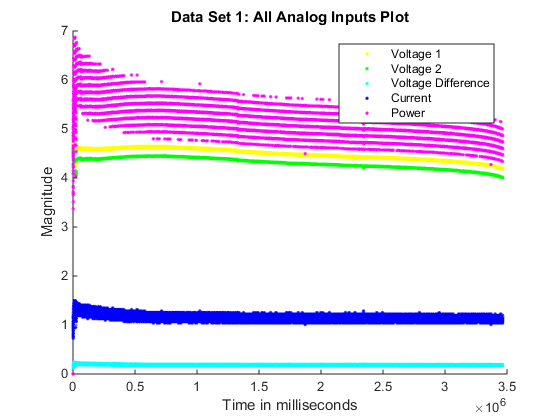

Plotting Experimental Data Set
clear all;
clc;
fig = 0;
shunt_r = 0.1598;
files = {'data_take2.csv'};
files = {};
if length(files) <= 0
files = uigetfile('*.csv','Select Data Set(s)','MultiSelect','on');
end
if ~iscell(files)
files = {files};
end
for i = 1:length(files)
col_data = csvread(files{i}, 1);
plot_until_index = col_data(:,2) - col_data(:,3);
thresh = 50;
plot_until_index = find(plot_until_index > thresh, 1);
plot_until_index = plot_until_index - 1;
time_mills = col_data(1:plot_until_index,1);
ms_dies = time_mills(plot_until_index);
min_dies = ms_dies ./(1000 .* 60);
fprintf('\nBattery Dies after %.3f minute(s).\n', min_dies);
titles = {'Time (ms)'; ...
'Voltage 1'; 'Voltage 2'; 'Voltage Difference'; 'Current'; 'Power'};
time_mills = col_data(1:plot_until_index,1);
clear data;
total_plots = min(size(col_data));
total_plots = max(total_plots, 6);
colors = hsv(total_plots);
for j = 1:total_plots;
if j <= length(titles)
data{j}.title = titles{j};
else
data{j}.title = sprintf('Input %.0d', j);
end
if j <= min(size(col_data))
data{j}.y = col_data(1:plot_until_index,j);
end
if (j > 1) .* (j<4)
data{j}.y = 5.0 .* data{j}.y ./ 1024.0;
end
if j == 4
data{j}.y = data{2}.y - data{3}.y;
end
if j == 5
data{j}.y = data{4}.y ./ shunt_r;
end
if j == 6
data{j}.y = data{2}.y .* data{5}.y;
end
data{j}.x = time_mills;
if j ~= 0
fig = fig+1;
figure(fig);
plot( data{j}.x, data{j}.y, 'color', colors(j,:));
ylabel( data{j}.title);
xlabel(titles(1));
title(sprintf('Data Set %.0d: %s', i, data{j}.title));
end
  

 
end
Battery Dies after 57.751 minute(s).
fig = fig+1;
figure(fig);
hold on;
for j = 2:length(data)
plot(data{j}.x, data{j}.y, 'Color', colors(j,:));
end
ylabel('A/D Magnitude in Bits' );
xlabel('Time in milliseconds' );
legend(titles(2:length(titles)) );
title(sprintf('Data Set %.0d: %s', i, 'All Analog Inputs Plot') );
hold off;

fig = fig+1;
figure(fig);
hold on;
for j = 2:length(data)
plot(data{j}.x, data{j}.y, '.', 'Color', colors(j,:));
end
ylabel('Magnitude' );
xlabel('Time in milliseconds' );
legend(titles(2:length(titles)) );
title(sprintf('Data Set %.0d: %s', i, 'All Analog Inputs Plot') );
hold off;

fit = polyfit(transpose(time_mills), 1:length(time_mills),1);
avg_period = 1/fit(1);
fprintf('\nData Set %s (%.0d) ', files{i}, i);
fprintf('has an Average Sampling Rate of %.3f ', avg_period);
fprintf('milliseconds.\n');
Data Set USB_Power_Bank_Drain_log.csv (1) has an Average Sampling Rate of 25.776 milliseconds.
fs_rate = 1000/(avg_period);
N_samples = length(time_mills);
f_axis = linspace(-fs_rate/2,fs_rate/2,N_samples);
if length(data) >= 6
avg_power = mean(data{6}.y);
fprintf('\nAverage Power Output: %.3f Watts.', avg_power);
run_hour = time_mills(end);
run_hour = run_hour ./(1000 .* 60 .* 60);
fprintf('\nOver %.3f Hour(s).', run_hour);
fprintf('\nYeilds %.3f Watt-Hours.\n', avg_power .* run_hour);
end
Average Power Output: 5.175 Watts.
Over 0.963 Hour(s).
Yeilds 4.981 Watt-Hours.
end